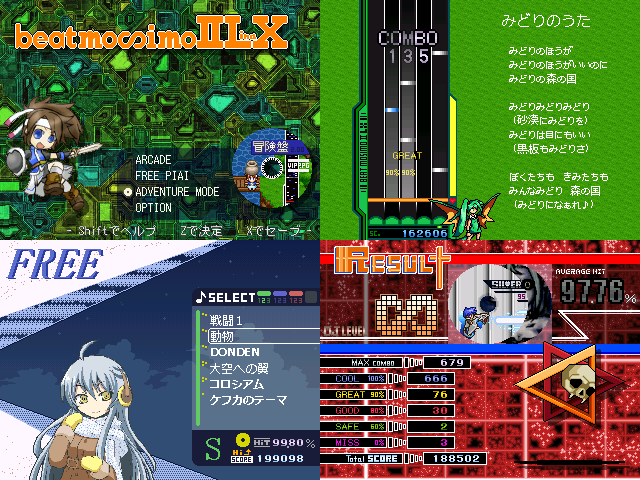

作品紹介
| ≪ Back | トップページ | 作品一覧 | Next ≫ |
| No010. - beatmosimoⅡLX 冒険盤 |

| 使用ツール：RPGツクール2000 |
| 作者：やべえ |
| ジャンル：音ゲー |
| 動画・配信：自己責任で |
|
音ゲーです。現在37曲収録。 アーケードでその内の17曲を遊ぶことができます。 フリーモードでは一度プレイしたことのある曲を自由に演奏できます。 アドベンチャーは散歩要素のあるパズルアクションになりました。 敵や物や市民を吹き飛ばしながら宝箱を探し、 隠し曲にwktkしたり100種くらいあるアイテムを集めてみたり、 ダンジョンの仕掛けにうんざりしてF12する感じのゲームです。 今回はHPだけでなく根性値や打鍵補助のパラメータも用意しました。 基本的には装備が強くなれば死ににくくなります。 |
| 管理人コメント： 10 ：爆音で名前が聞こえません ：2011/10/30(日) 4:29:29 ID:kohaku11 . |￣ . ( ﾟдﾟ) .| リノンとリナって名前が似てるな | ヽﾉヽr┘ ＞＞ 'Ｔ . |￣ ( ﾟдﾟ )彡| | ヽﾉヽr┘ ＞＞ 'Ｔ |
| ダウンロード(13.7MB) / 感想掲示板 ツイート |
更新情報・お知らせ
- 2011/12/28
- 本体修正
- 2011/12/26
- パッチ追加
- 2011/12/26
- パッチ追加
- 2011/12/23
- 提出
- 2011/12/20
- SS アイコン コメント 変更
- 2011/10/30
- エントリー